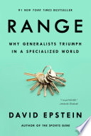

isbn-13: 9780735214484
Audible
Publisher’s Description:
“Shares counterintuitive advice on the most effective path to success in any domain while revealing the essential contributions of generalist, not specialist, team members”
Quotes
Eventual elites typically devote less time early on to deliberate practice in the activity in which they will eventually become experts. Instead, they undergo what researchers call a “sampling period.” They play a variety of sports, usually in an unstructured or lightly structured environment; they gain a range of physical proficiencies from which they can draw; they learn about their own abilities and proclivities; and only later do they focus in and ramp up technical practice in one area.
I dove into work showing that highly credentialed experts can become so narrow-minded that they actually get worse with experience, even while becoming more confident—a dangerous combination. And I was stunned when cognitive psychologists I spoke with led me to an enormous and too often ignored body of work demonstrating that learning itself is best done slowly to accumulate lasting knowledge, even when that means performing poorly on tests of immediate progress. That is, the most effective learning looks inefficient; it looks like falling behind.
increasing specialization has created a “system of parallel trenches” in the quest for innovation. Everyone is digging deeper into their own trench and rarely standing up to look in the next trench over, even though the solution to their problem happens to reside there.
The challenge we all face is how to maintain the benefits of breadth, diverse experience, interdisciplinary thinking, and delayed concentration in a world that increasingly incentivizes, even demands, hyperspecialization.
The bestseller Talent Is Overrated used the Polgar sisters and Tiger Woods as proof that a head start in deliberate practice is the key to success in “virtually any activity that matters to you.” The powerful lesson is that anything in the world can be conquered in the same way. It relies on one very important, and very unspoken, assumption: that chess and golf are representative examples of all the activities that matter to you.
It was a wide-ranging review of research that rocked psychology because it showed experience simply did not create skill in a wide range of real-world scenarios, from college administrators assessing student potential to psychiatrists predicting patient performance to human resources professionals deciding who will succeed in job training. In those domains, which involved human behavior and where patterns did not clearly repeat, repetition did not cause learning. Chess, golf, and firefighting are exceptions, not the rule.
In 2009, Kahneman and Klein took the unusual step of coauthoring a paper in which they laid out their views and sought common ground. And they found it. Whether or not experience inevitably led to expertise, they agreed, depended entirely on the domain in question. Narrow experience made for better chess and poker players and firefighters, but not for better predictors of financial or political trends, or of how employees or patients would perform.
The domains Klein studied, in which instinctive pattern recognition worked powerfully, are what psychologist Robin Hogarth termed “kind” learning environments. Patterns repeat over and over, and feedback is extremely accurate and usually very rapid. In golf or chess, a ball or piece is moved according to rules and within defined boundaries, a consequence is quickly apparent, and similar challenges occur repeatedly.
Kahneman was focused on the flip side of kind learning environments; Hogarth called them “wicked.” In wicked domains, the rules of the game are often unclear or incomplete, there may or may not be repetitive patterns and they may not be obvious, and feedback is often delayed, inaccurate, or both.
Our greatest strength is the exact opposite of narrow specialization. It is the ability to integrate broadly.
“AI systems are like savants.” They need stable structures and narrow worlds.
When narrow specialization is combined with an unkind domain, the human tendency to rely on experience of familiar patterns can backfire horribly—like the expert firefighters who suddenly make poor choices when faced with a fire in an unfamiliar structure.
All this is bad news for some of the business world’s favorite successful-learning analogies—the Polgars, Tiger, and to some degree analogies based in any sport or game. Compared to golf, a sport like tennis is much more dynamic, with players adjusting to opponents every second, to surfaces, and sometimes to their own teammates. (Federer was a 2008 Olympic gold medalist in doubles.) But tennis is still very much on the kind end of the spectrum compared to, say, a hospital emergency room, where doctors and nurses do not automatically find out what happens to a patient after their encounter. They have to find ways to learn beyond practice, and to assimilate lessons that might even contradict their direct experience. The world is not golf, and most of it isn’t even tennis. As Robin Hogarth put it, much of the world is “Martian tennis.” You can see the players on a court with balls and rackets, but nobody has shared the rules. It is up to you to derive them, and they are subject to change without notice.
The main conclusion of work that took years of studying scientists and engineers, all of whom were regarded by peers as true technical experts, was that those who did not make a creative contribution to their field lacked aesthetic interests outside their narrow area. As psychologist and prominent creativity researcher Dean Keith Simonton observed, “rather than obsessively focus[ing] on a narrow topic,” creative achievers tend to have broad interests. “This breadth often supports insights that cannot be attributed to domain-specific expertise alone.”
Connolly’s primary finding was that early in their careers, those who later made successful transitions had broader training and kept multiple “career streams” open even as they pursued a primary specialty. They “traveled on an eight-lane highway,” he wrote, rather than down a single-lane one-way street. They had range. The successful adapters were excellent at taking knowledge from one pursuit and applying it creatively to another, and at avoiding cognitive entrenchment. They employed what Hogarth called a “circuit breaker.” They drew on outside experiences and analogies to interrupt their inclination toward a previous solution that may no longer work. Their skill was in avoiding the same old patterns. In the wicked world, with ill-defined challenges and few rigid rules, range can be a life hack.
In Flynn’s terms, we now see the world through “scientific spectacles.” He means that rather than relying on our own direct experiences, we make sense of reality through classification schemes, using layers of abstract concepts to understand how pieces of information relate to one another.
Research on thousands of adults in six industrializing nations found that exposure to modern work with self-directed problem solving and nonrepetitive challenges was correlated with being “cognitively flexible.”
that modern life requires range, making connections across far-flung domains and ideas. Luria addressed this kind of “categorical” thinking, which Flynn would later style as scientific spectacles. “[It] is usually quite flexible,” Luria wrote. “Subjects readily shift from one attribute to another and construct suitable categories. They classify objects by substance (animals, flowers, tools), materials (wood, metal, glass), size (large, small), and color (light, dark), or other property. The ability to move freely, to shift from one category to another, is one of the chief characteristics of ‘abstract thinking.’”
Chicago has long prided itself on a core curriculum dedicated to interdisciplinary critical thinking. The two-year core, according to the university, “is intended as an introduction to the tools of inquiry used in every discipline—science, mathematics, humanities, and social sciences. The goal is not just to transfer knowledge, but to raise fundamental questions and to become familiar with the powerful ideas that shape our society.”
Jeannette Wing, a computer science professor at Columbia University and former corporate vice president of Microsoft Research, has pushed broad “computational thinking” as the mental Swiss Army knife. She advocated that it become as fundamental as reading, even for those who will have nothing to do with computer science or programming. “Computational thinking is using abstraction and decomposition when attacking a large complex task,” she wrote. “It is choosing an appropriate representation for a problem.”
Like chess masters and firefighters, premodern villagers relied on things being the same tomorrow as they were yesterday. They were extremely well prepared for what they had experienced before, and extremely poorly equipped for everything else. Their very thinking was highly specialized in a manner that the modern world has been telling us is increasingly obsolete. They were perfectly capable of learning from experience, but failed at learning without experience. And that is what a rapidly changing, wicked world demands—conceptual reasoning skills that can connect new ideas and work across contexts. Faced with any problem they had not directly experienced before, the remote villagers were completely lost. That is not an option for us. The more constrained and repetitive a challenge, the more likely it will be automated, while great rewards will accrue to those who can take conceptual knowledge from one problem or domain and apply it in an entirely new one.
The psychologists highlighted the variety of paths to excellence, but the most common was a sampling period, often lightly structured with some lessons and a breadth of instruments and activities, followed only later by a narrowing of focus, increased structure, and an explosion of practice volume.
But for learning that is both durable (it sticks) and flexible (it can be applied broadly), fast and easy is precisely the problem.
Kornell was explaining the concept of “desirable difficulties,” obstacles that make learning more challenging, slower, and more frustrating in the short term, but better in the long term.
Used for learning, testing, including self-testing, is a very desirable difficulty. Even testing prior to studying works, at the point when wrong answers are assured.
another important desirable difficulty: “spacing,” or distributed practice. It is what it sounds like—leaving time between practice sessions for the same material. You might call it deliberate not-practicing between bouts of deliberate practice.
In 2007, the U.S. Department of Education published a report by six scientists and an accomplished teacher who were asked to identify learning strategies that truly have scientific backing. Spacing, testing, and using making-connections questions were on the extremely short list. All three impair performance in the short term.
Psychologist Robert Bjork first used the phrase “desirable difficulties” in 1994. Twenty years later, he and a coauthor concluded a book chapter on applying the science of learning like this: “Above all, the most basic message is that teachers and students must avoid interpreting current performance as learning. Good performance on a test during the learning process can indicate mastery, but learners and teachers need to be aware that such performance will often index, instead, fast but fleeting progress.”
for knowledge to be flexible, it should be learned under varied conditions, an approach called varied or mixed practice, or, to researchers, “interleaving.” Interleaving has been shown to improve inductive reasoning. When presented with different examples mixed together, students learn to create abstract generalizations that allow them to apply what they learned to material they have never encountered before.
Desirable difficulties like testing and spacing make knowledge stick. It becomes durable. Desirable difficulties like making connections and interleaving make knowledge flexible, useful for problems that never appeared in training. All slow down learning and make performance suffer, in the short term.
Before-our-eyes progress reinforces our instinct to do more of the same, but just like the case of the typhoid doctor, the feedback teaches the wrong lesson. Learning deeply means learning slowly. The cult of the head start fails the learners it seeks to serve. Knowledge with enduring utility must be very flexible, composed of mental schemes that can be matched to new problems.
When a knowledge structure is so flexible that it can be applied effectively even in new domains or extremely novel situations, it is called “far transfer.”
“In my opinion,” Gentner told me, “our ability to think relationally is one of the reasons we’re running the planet. Relations are really hard for other species.” Analogical thinking takes the new and makes it familiar, or takes the familiar and puts it in a new light, and allows humans to reason through problems they have never seen in unfamiliar contexts. It also allows us to understand that which we cannot see at all.
In a wicked world, relying upon experience from a single domain is not only limiting, it can be disastrous.
The trouble with using no more than a single analogy, particularly one from a very similar situation, is that it does not help battle the natural impulse to employ the “inside view,” a term coined by psychologists Daniel Kahneman and Amos Tversky. We take the inside view when we make judgments based narrowly on the details of a particular project that are right in front of us.
Our natural inclination to take the inside view can be defeated by following analogies to the “outside view.” The outside view probes for deep structural similarities to the current problem in different ones. The outside view is deeply counterintuitive because it requires a decision maker to ignore unique surface features of the current project, on which they are the expert, and instead look outside for structurally similar analogies. It requires a mindset switch from narrow to broad.
Psychologists have shown repeatedly that the more internal details an individual can be made to consider, the more extreme their judgment becomes.
In one of the most cited studies of expert problem solving ever conducted, an interdisciplinary team of scientists came to a pretty simple conclusion: successful problem solvers are more able to determine the deep structure of a problem before they proceed to match a strategy to it. Less successful problem solvers are more like most students in the Ambiguous Sorting Task: they mentally classify problems only by superficial, overtly stated features, like the domain context. For the best performers, they wrote, problem solving “begins with the typing of the problem.” As education pioneer John Dewey put it in Logic, The Theory of Inquiry, “a problem well put is half-solved.”
In the late 1960s, future Nobel laureate economist Theodore Schultz argued that his field had done well to show that higher education increased worker productivity, but that economists had neglected the role of education in allowing individuals to delay specialization while sampling and finding out who they are and where they fit.
Learning stuff was less important than learning about oneself. Exploration is not just a whimsical luxury of education; it is a central benefit.
The expression “young and foolish,” he wrote, describes the tendency of young adults to gravitate to risky jobs, but it is not foolish at all. It is ideal. They have less experience than older workers, and so the first avenues they should try are those with high risk and reward, and that have high informational value.